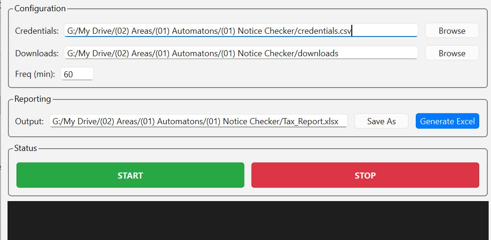

Download the Installer
Download our custom installer to unpack and set up the ITNC bot securely on your PC.
⬇ Download ITNC Setup• Windows SmartScreen: If you see a blue "Windows protected your PC" popup, click More info and then Run anyway.
• Antivirus False Positives: Third-party antivirus software might flag the downloaded file. This is a common false positive for newly compiled Python software. Our app is thoroughly tested and completely secure.
🛡️ View our 100% Clean Virus Scan Report from giants like Kaspersky and Bitdefender
Activate License
The app download is free, but you need a Pro License to run the automation. Purchase your key securely below.
Once you have the key from your email, simply launch the ITNC app and paste it into the activation window.
Get free 30 days trailPrepare Credentials
Download the sample CSV file below. Fill it with your clients' PAN numbers and passwords. Then, open the ITNC app and browse to select your prepared CSV file.

Start and Forget
Click the big green START button. The bot will begin cycling through your clients.
You can close the window—it will minimize to your system tray and continue running silently in the background.
Generate Report
When the process is complete, open the app and click Generate Excel. A master sheet with all findings will be created instantly.